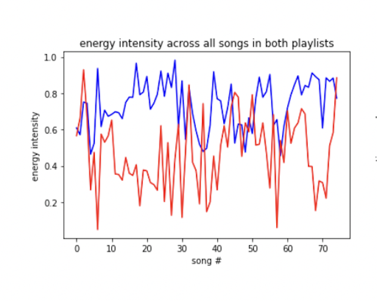
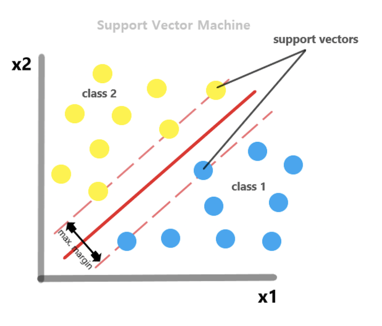
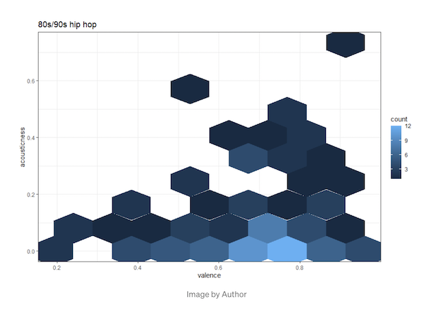
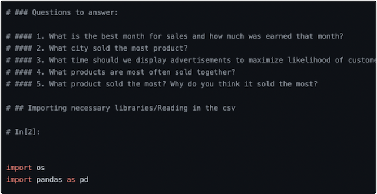
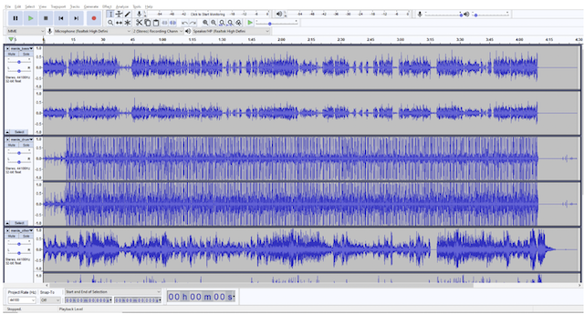

Projects
Focused around coding ML and AI related projects
Github

KNN Algorithm to Classify Spotify Songs into Playlists (ML)
GitHub
Medium
The broad concept behind this project is to create a model that can take any song and, depending on its musical attributes, classify it into a playlist with the nearest, shared qualities.

OCC-SVM Model for Small Businesses (ML)
GitHub
Medium
I will run through a Small Business scenario I created to give insight into how Data Science can be used to find trends in customer behavior which can, in return, help grow a business.

80s/90s music and Modern Day Hip-Hop using Spotipy
GitHub
On the structural disparities between early and contemporary hip hop.

Sales Analysis
GitHub
Using dataset of details on technologies to answer sales questions.

Music Source Separation
GitHub
Medium
However, it’s not possible to hear a singular stem without it being distorted by the many other stems. This is where Spleeter comes into play…